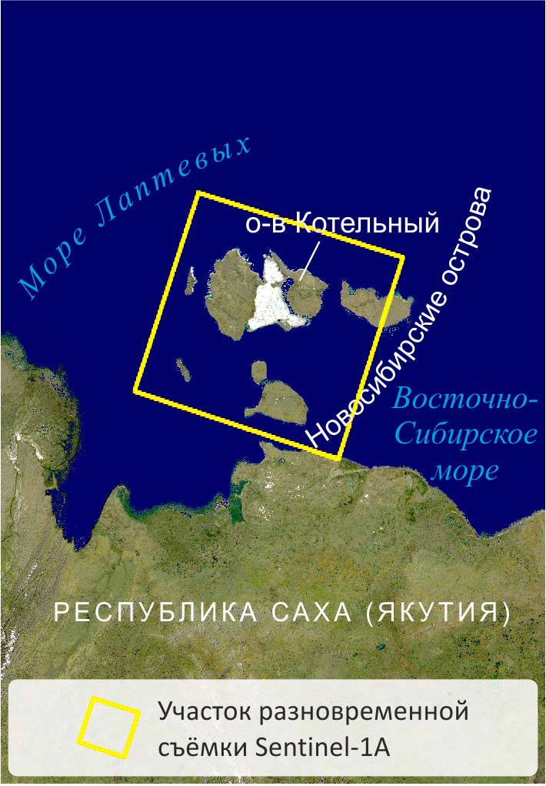

Радиолокационные данные в географических исследованиях и картографировании |
|||||||||||||||||||||||||||||||||||||||||||||
|
|

Остров Котельный входит в состав архипелага Новосибирские острова и состоит из трёх существенно
различающихся частей, исторически получивших названия о. Котельный, Земля Бунге и о. Фаддеевский (с запада
на восток).
Западная часть острова – наиболее возвышенная, в её рельефе выделяются два гипсометрических уровня: прибрежная равнина (средние высоты 20-40 м) и возвышенности с преобладанием плато (80-120 м), отдельные вершины на юге достигают высот более 300 м. Земля Бунге – практически ровная песчаная пустыня с высотами до 6-10 м, в центре которой находится возвышенность Евсекю-Булгуннях с высотами более 10 м, сложенная прочными дочетвертичными породами с признаками эрозионного расчленения, а на юго-востоке – возвышенность Земли Бунге с преимущественно термокарстовым расчленением. Восточная часть (о. Фаддеевский) – расчленённая равнина со средними высотами 20-30 м, сложенная мерзлыми рыхлыми отложениями с включениями ископаемого льда. Остров расположен в зоне сплошного распространения многолетней мерзлоты, ему свойственны разнообразные формы криогенного рельефа. Высокоширотное географическое положение острова определяет господство арктического климата с низкими температурами и малым количеством осадков (130-140 мм) при их неравномерном распределении в течение года (наибольшее количество – в июле и августе); снежный покров держится не менее 9 месяцев, снегопады нередки и в короткий летний период. На Котельном и Фаддеевском хорошо развита речная сеть, здесь же распространены озёра. Плоские понижения в пределах низменностей заболочены. Песчаная пустыня Земли Бунге лишена постоянных водотоков, однако в летний период здесь образуются широкие ложбины стока талых вод. Растительный покров острова достаточно скудный, распределен неравномерно; основные жизненные формы - кустарнички, многолетние травы, мхи и лишайники, высота растений не превышает 10-15 см, вегетационный период длится не более двух месяцев. Густота растительности во многом зависит от положения участка в рельефе и наличия снежного покрова: в местах, лишенных снега, а также на пустынной песчаной Земле Бунге растительность крайне разрежена или полностью отсутствует. Наиболее богата флора в защищенных речных долинах и аласах. В 2013 г. на территории острова Котельный началось восстановление военной базы, здесь же планируется создание государственного природного заказника «Новосибирские острова». Для картографирования природно-территориальных комплексов острова из архива Sentinel Data Hub отобраны разновременные снимки, полученные со спутника Sentinel-1A.
На основе исходных радиолокационных снимков созданы производные изображения, предназначенные для 1 - визуального и 2 - автоматизированного дешифрирования. В первом случае предварительная обработка заключалась в фильтрации спекл-шума, ортотрансформировании и цветовом синтезе снимков, полученных в разных поляризационных каналах (R - HH, G - HV, B - HH/HV). Создание цветного синтезированного изображения из разнополяризационных снимков от 03.07.2015 г. (слева направо: амплитудные снимки в поляризации HH и HV, отношение яркости HH/HV, RGB-изображение)
Особенности изображения острова Котельный на цветных многополяризационных снимках Sentinel-1A Синтезированный снимок Sentinel-1A, 3 июля 2015 г.: R - HH, G - HV, B – HH/HV. Стрелками показаны направление полёта космического аппарата (азимут, А) и направление визирования (дальность, Д). Пояснение к цифрам - в тексте На цветных многополяризационных радиолокационных снимках, полученных в бесснежный период, существенно отличаются три части острова: более разнообразные по рельефу и растительному покрову острова Фаддеевский и Котельный имеют высокую яркость и изображаются разнообразными цветами. Земля Бунге, расположенная в центре, слабо отличается от свободной ото льда морской поверхности. Ярким синим цветом изображена морская поверхность, покрытая льдом. Для западной части – острова Котельный – характерен наиболее выраженный рельеф, его внутренняя часть представлена возвышенным плато (цифра 1 на рисунке). На северо-востоке плато имеет резкий уступ (2), хорошо заметный в виде ярко-жёлтой полосы, повышение яркости обусловлено рассеянием большей части радиосигнала склонами, обращенными в сторону радиолокатора. Благодаря этой же особенности радиолокационной съёмки в отдельных случаях распознаются участки плато с сильным эрозионным расчленением (3) и отдельные вершины столообразных гор (4), расположенные в южной части острова. Восточная часть представляет собой низменную равнину с многочисленными хорошо различимыми по темному тону речными долинами (5) (понижение интенсивности обратного сигнала связано с заболоченностью этих участков и относительно плоским рельефом) и термокарстовыми котловинами (6), имеющими, как правило, округлую форму. Земля Бунге – практически ровная песчаная поверхность без растительности (7) – на большей части изображения имеет почти чёрный цвет из-за низкой диэлектрической проницаемости песчаных отложений и, как следствие, слабого обратного сигнала в обеих поляризациях. Таким же тёмным тоном на фоне морского льда изображаются узкие песчаные косы (8). При этом галечные косы (9), осложняющие западный берег острова Котельный, за счёт большей шероховатости имеют высокую яркость на изображении. На фоне песчаной пустыни чётко выделяются районы с эоловыми формами рельефа (10), возвышенность Евсекю-Булгуннях (11) с сильным эрозионным расчленением, изрезанные термоабразионные берега (12), поскольку поверхности с большей степенью расчленения дают несколько повышенный обратный сигнал. Синий цвет этих участков на синтезированном изображении объясняется их повышенной яркостью на изображении HH/HV, где усилено влияние компоненты согласованной поляризации HH. Остров Фаддеевский – равнина с большим количеством речных долин (5) и термокарстовых котловин (6), в юго-восточной части которой находится участок с очень высокой степенью эрозионного расчленения, со множеством микроформ криогенного рельефа (13), имеющий благодаря этому высокую яркость на изображении.
Существенно различается изображение острова на снимках, полученных в разные сезоны года. На снимке зимнего периода (январь) наиболее отчётливо выделяющиеся объекты - плато в центральной части и низкие горы на юге острова Котельный (изображаются жёлтым цветом), границы которых гораздо хуже различимы на летнем снимке (июль). Столь же уверенно плато и низкогорье выделяются синим цветом на снимке, полученном в начале июня (во время недавно установившихся положительных температур) из-за наличия мокрого снега, который способствует поглощению радиоволн, в результате чего такие участки имеют низкую яркость на изображении. По этой же причине выделяются термокарстовые котловины и другие понижения со скоплениями мокрого снега. Синтезированные снимки Sentinel-1A, R - HH, G - HV, B – HH/HV: А - 15.07.2015 г., Б - 11.01.2016 г., В - 03.06.2016 г. По-разному на снимках разных сроков изображаются озёра. В тёплый период открытая спокойная водная поверхность даёт низкий обратный сигнал и низкую яркость на снимке за счёт преобладания однократного рассеяния волны в сторону от радиолокатора. Взволнованная поверхность воды за счёт возросшей шероховатости даёт более высокий обратный сигнал и яркость на снимке. В холодный период по-разному будут изображаться участки озёр, промёрзшие и не промёрзшие до дна. В случае полного промерзания части озера до дна низкий контраст в диэлектрической проницаемости льда и мерзлого грунта приводит к слабому рассеянию радиоволны на их границе, что обусловливает низкие значения обратного сигнала и, как следствие низкую яркость на снимке. А в том случае, когда озеро не промерзает до дна, взаимодействие радиоволны с толщей льда и находящимися в нем пузырьками воздуха (при их наличии), а также с шероховатой границей «плавучий лёд – незамёрзшая вода» приводит к тому, что волна возвращается в сторону радиолокатора, в результате чего эти участки изображаются яркими на снимке.
Автоматизированное дешифрирование радиолокационных изображений Sentinel-1A Объективному выделению однородных участков на радиолокационных изображениях на основании сходства и различия интенсивности обратного рассеяния способствует их классификация. Проведена неконтролируемая классификация (кластеризация) многовременного снимка, составленного из 19 изображений, охватывающих временной интервал с 07.10.2015 г. по 19.09.2016 г. (снимки охватывают полностью один "холодный" и один "тёплый" период).
1 - относительно ровная песчаная пустыня Земли Бунге, практически лишённая растительности. Невысокие значения УЭПР относительно класса 2 объясняются достаточно низкой степенью шероховатости поверхности. Снижение значений УЭПР в летний период связано, вероятно, с просыханием песков (сухие песчаные отложения характеризуются низкой диэлектрической проницаемостью и способны пропускать радиоволну в глубину до встречи с объектом с иными диэлектрическими свойствами. 2 - все остальные участки острова, характеризующиеся разным характером и степенью расчленения рельефа и разным характером растительного покрова. В целом для этого класса характерны более высокие, чем для класса 1, значения УЭПР и зимой, и летом. Относительно низкие значения УЭПР в холодный период объясняются низкой диэлектрической проницаемостью промёрзшх грунтов, а относительно высокие значения в тёплый период - более высокой диэлектрической проницаемостью оттаявших грунтов, развитием растительности.
1 - песчаная пустыня Земли Бунге, практически лишённая растительного покрова. График изменений средних значений УЭПР в целом похож на график класса 1 при кластеризации с выделением двух классов. 2 - преимущественно участки выхода прочных дочетвертичных пород с признаками эрозионного расчленения, практически лишённые растительного покрова. Этому классу свойственны достаточно низкие значения УЭПР в течение года, но выше, чем для ровной песчаной пустыни, что объсняется большей шероховатостью поверхности. 3 - речные долины и термокарстовые котловины преимущественно с болотной растительностью. График УЭПР этого класса в целом похож на график для класса 4, однако значения УЭПР несколько ниже, особенно летом. Это может быть связано с более плоским рельефом (по сравнению с участками равнины) и высокой степенью заболоченности (понижение значений УЭПР обусловлено как наличием пятен открытой водной поверхности между вегетирующей растительностью, суммарно приводящих к снижению интенсивности обратного рассеяния в пикселе изображения, так и тем, что относительно низкорослая растительность не препятствует прохождению радиоволны до гладкой поверхности воды, приводя к преобладанию однократного рассеяния). 4 - равнинные участки с разной степенью эрозионного и термокарстового расчленения, с тундровой растительностью. График изменений средних значений УЭПР в целом похож на график класса 2 при кластеризации с выделением двух классов. 5 - участки платообразных возвышенных равнин. Для этого класса характерны самые высокие значения УЭПР в зимний период и одни из самых высоких - в летний, что можно связать как с большим количеством склонов, обращённых в сторону радиолокатора, которые дают повышенный уровень обратного сигнала, так и с высокой степенью шероховатости поверхности за счёт наличия грубого обломочного материала. Понижение значений УЭПР 3 июня 2016 г. связано с наличием мокрого снега на поверхности плато, который приводит к поглощению радиоволн. Картографирование природно-территориальных комплексов острова Котельный
Составленная карта даёт представление о современных природно-территориальных комплексах острова Котельный, различающихся характером сезонной изменчивости УЭПР, сочетанием рельефа, растительного покрова и грунтов. Материалы зимних радиолокационных съёмок позволили также выявить различия в характере промерзания озёр в пределах острова. Карта природно-территориальных комплексов острова Котельный |
||||||||||||||||||||||||||||||||||||||||||||
| © 2017 г. Балдина Е.А., Трошко К.А., лаборатория аэрокосмических методов, Географический факультет МГУ имени М.В. Ломоносова | |||||||||||||||||||||||||||||||||||||||||||||